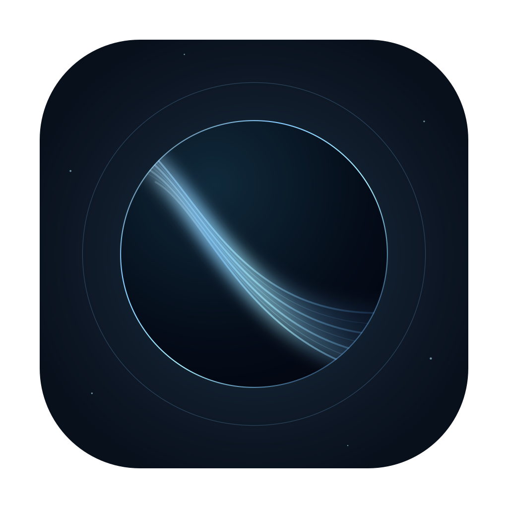

Catch up
“Find my website chat and remind me what we decided.”
Find saved local chats and read relevant messages.

notdotTalk, remember useful details and work with your Codex chats by voice.
Before you download
Deepgram is optional, with its own API key, for speech recognition.
macOS · Windows · Linux
Pick up context, send work and check progress without switching between chats.
“Find my website chat and remind me what we decided.”
Find saved local chats and read relevant messages.
“Tell Website to make the button clearer.”
Send an instruction to the chat you choose. Add “and let me know when it’s done” for a spoken result when you’re idle.
“Stop the task you started in Website.”
Check progress, add instructions or stop work that notdot started.
Chats already in use by the Codex desktop app need a handoff before notdot can send work. How chat controls work ↗
Say your companion’s name, or click the orb to start. Pause when you’re done; notdot replies aloud.
Turn on follow-up listening to answer without another click or wake phrase. The orb shows when it’s listening. Say “That’s all” to stop, or let the window close.
With your permission, notdot can remember preferences, ongoing projects and things you ask it to keep. Review, edit or delete those memories whenever you like.
Say “Hey Ava”, ask a question and hear the reply. A real exchange, recorded at normal speed.
Read the transcript · Download with captions
The demo reply audio uses ElevenLabs’ free plan and is for non-commercial use only.
Choose a name, colour and voice. Ask notdot to change a setting, hear it read back and approve before it saves.
Choose who it responds to, with separate chats and memories for trusted people. Anyone can be removed, or remove themselves with a spoken code and a confirmation on screen. Allow reminders and set quiet hours. Voice matching is not authentication.
Wake listening stays on your computer. After activation, your voice service receives the request and the model receives its text. Optional follow-up listening also sends audio during its listening window. Voice matching runs on your computer: saved voiceprints stay there, encrypted, and are deleted when a person is removed.
Your API keys are stored in your system’s secure key store. Saved memories use your computer’s storage protection.
Report a problem, suggest an improvement or help with development.
Contributor guide ↗